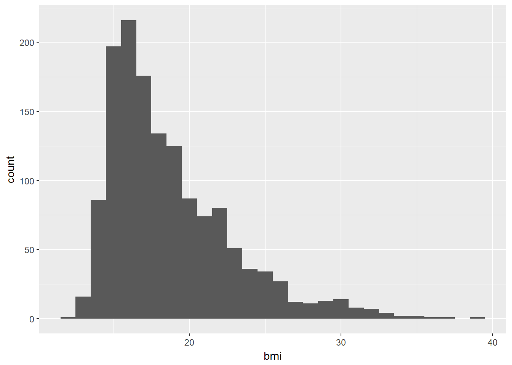
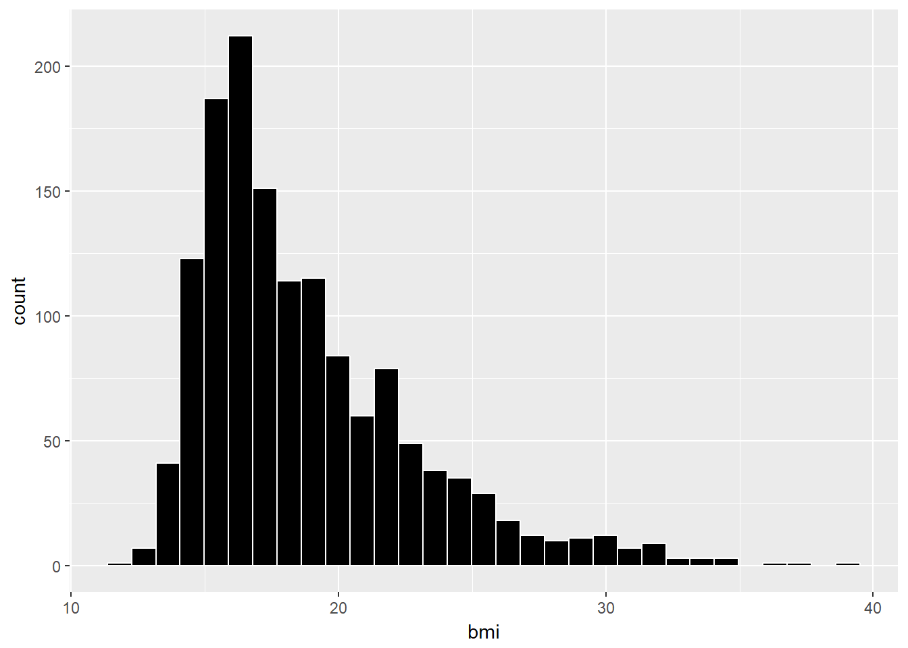
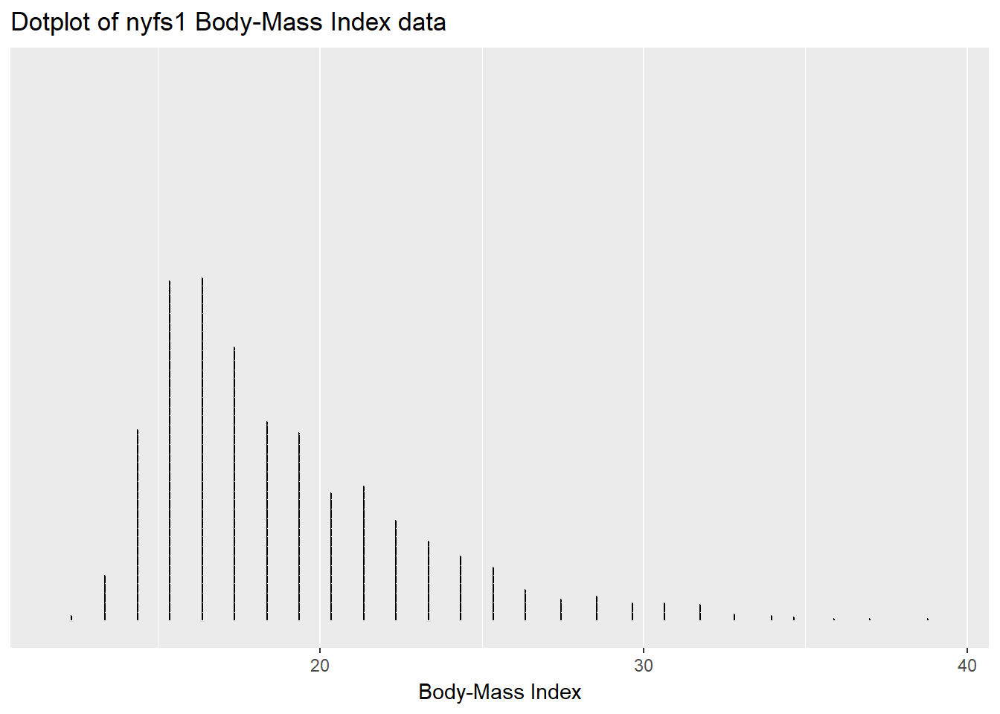
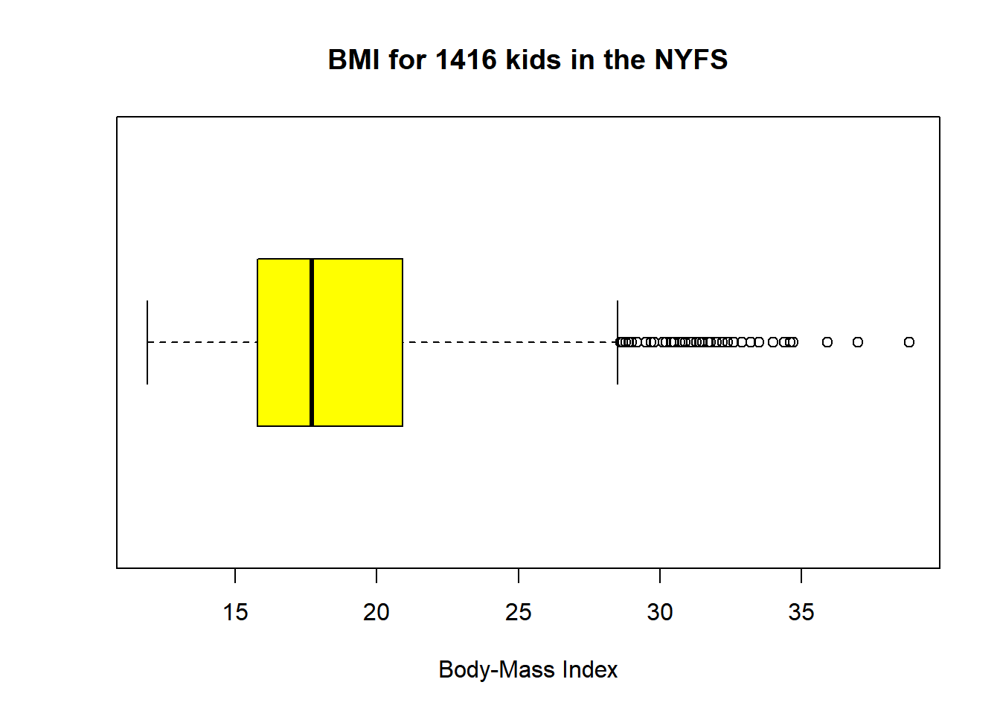
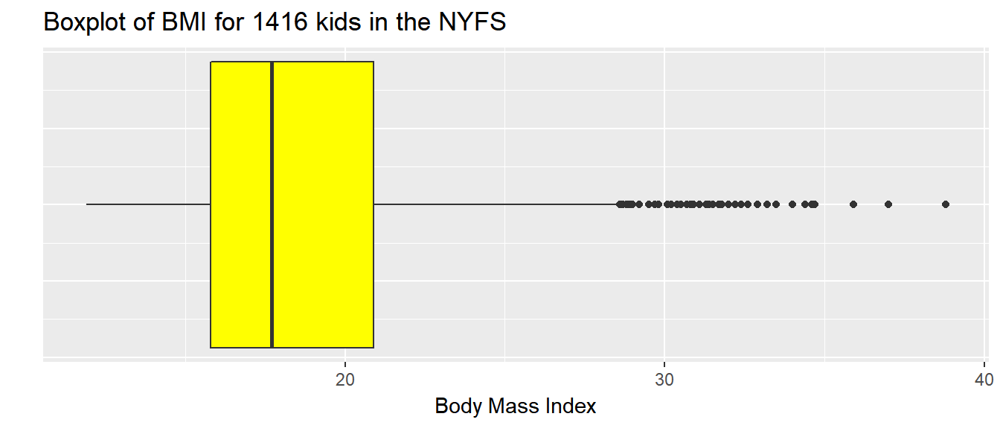
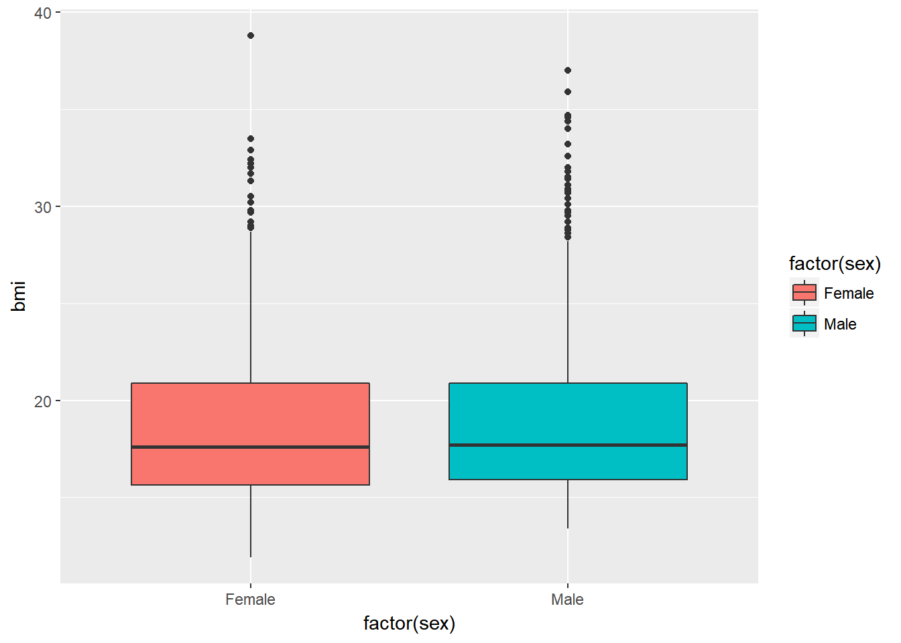
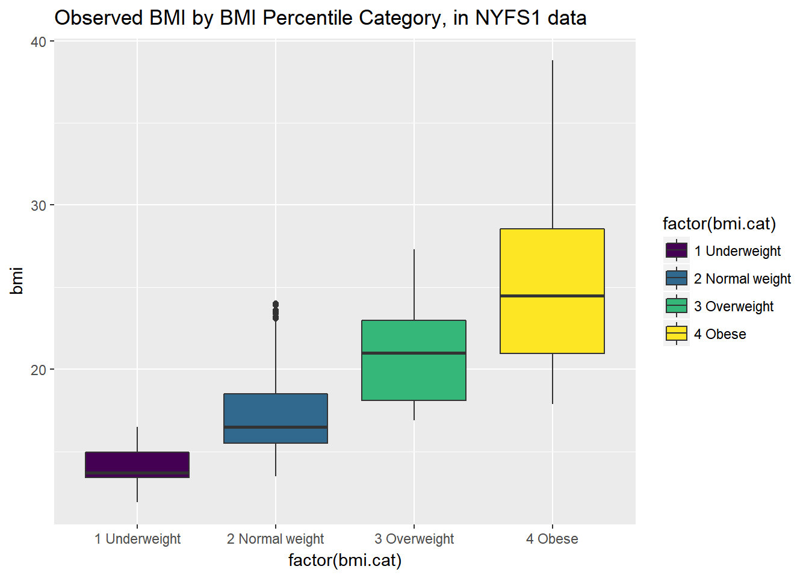
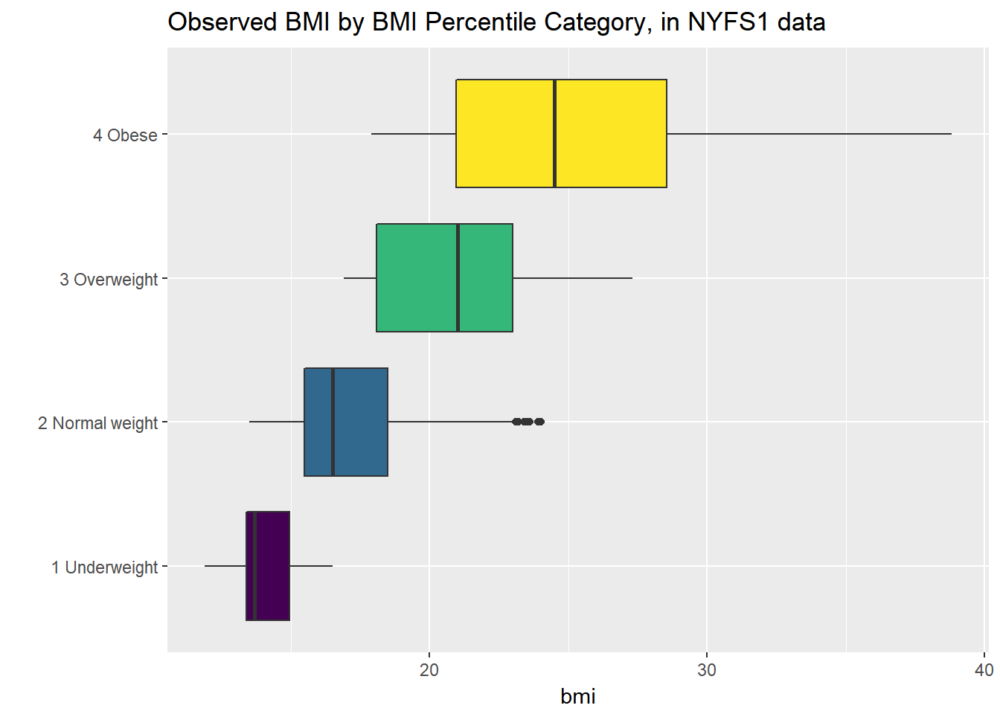

Chapter 7 The National Youth Fitness Survey (nyfs1)
The nyfs1.csv data file comes from the 2012 National Youth Fitness Survey.
The NHANES National Youth Fitness Survey (NNYFS) was conducted in 2012 to collect data on physical activity and fitness levels in order to provide an evaluation of the health and fitness of children in the U.S. ages 3 to 15. The NNYFS collected data on physical activity and fitness levels of our youth through interviews and fitness tests.
In the nyfs1.csv data file, I’m only providing a tiny portion of the available information. More on the NNYFS (including information I’m not using) is available at the links below.
- Demographic Information including a complete description of all available variables.
- Body Measures, part of the general Examination data with complete variable descriptions
What I did was merge a few elements from the available demographic information with some elements from the body measures data, reformulated and simplified some variables, and restricted the sample to kids who had a complete set of body measure examinations.
7.1 Looking over the Data Set
To start with, I’ll take a look at the nyfs1 data. One approach is to simply get the size of the set and the names of the available data elements.
## first, we'll import the data into the nyfs1 data frame
nyfs1 <- read.csv("data/nyfs1.csv")
## next we'll turn that data frame into a more useful tibble
nyfs1 <- tbl_df(nyfs1)
## size of the data frame
dim(nyfs1)[1] 1416 7There are 1416 rows (subjects) and 7 columns (variables), by which I mean that there are 1416 kids in the nyfs1 data frame, and we have 7 pieces of information on each subject.
So, what do we have, exactly?
nyfs1 # this is a tibble, has some nice features in a print-out like this# A tibble: 1,416 x 7
subject.id sex age.exam bmi bmi.cat waist.circ
<int> <fctr> <int> <dbl> <fctr> <dbl>
1 71918 Female 8 22.3 4 Obese 71.9
2 71919 Female 14 19.8 2 Normal weight 79.4
3 71921 Male 3 15.2 2 Normal weight 46.8
4 71922 Male 12 25.9 4 Obese 90.0
5 71923 Male 12 22.5 3 Overweight 72.3
6 71924 Female 8 14.4 2 Normal weight 56.1
7 71925 Male 7 15.9 2 Normal weight 54.5
8 71926 Male 8 17.0 2 Normal weight 59.7
9 71927 Male 3 15.8 2 Normal weight 49.9
10 71928 Female 9 16.0 2 Normal weight 59.9
# ... with 1,406 more rows, and 1 more variables: triceps.skinfold <dbl>Tibbles are a modern reimagining of the main way in which people have stored data in R, called a data frame. Tibbles were developed to keep what time has proven to be effective, and throwing out what is not. We can obtain the structure of the tibble from the str function.
str(nyfs1)Classes 'tbl_df', 'tbl' and 'data.frame': 1416 obs. of 7 variables:
$ subject.id : int 71918 71919 71921 71922 71923 71924 71925 71926 71927 71928 ...
$ sex : Factor w/ 2 levels "Female","Male": 1 1 2 2 2 1 2 2 2 1 ...
$ age.exam : int 8 14 3 12 12 8 7 8 3 9 ...
$ bmi : num 22.3 19.8 15.2 25.9 22.5 14.4 15.9 17 15.8 16 ...
$ bmi.cat : Factor w/ 4 levels "1 Underweight",..: 4 2 2 4 3 2 2 2 2 2 ...
$ waist.circ : num 71.9 79.4 46.8 90 72.3 56.1 54.5 59.7 49.9 59.9 ...
$ triceps.skinfold: num 19.9 15 8.6 22.8 20.5 12.9 6.9 8.8 10.8 13.2 ...7.1.1 subject.id
The first variable, subject.id is listed by R as an int variable, for integer, which means it consists of whole numbers. However, the information provided by this variable is minimal. This is just an identifying code attributable to a given subject of the survey. This is nominal data, which will be of little interest down the line. On some occasions, as in this case, the ID numbers are sequential, in the sense that subject 71919 was included in the data base after subject 71918, but this fact isn’t particularly interesting here, because the protocol remained unchanged throughout the study.
7.1.2 sex
The second variable, sex is listed as a factor (R uses factor to refer to categorical, especially non-numeric information) with two levels, Female and Male. You’ll note that what is stored in the structure is a series of 1 (referring to the first level - Female) and 2 (Male) values. If we want to know how many people fall in each category, we can build a little table.
dplyr::select(nyfs1, sex) %>%
table().
Female Male
707 709 dplyr::select(nyfs1, sex) %>%
table() %>%
addmargins() ## add marginal totals.
Female Male Sum
707 709 1416 dplyr::select(nyfs1, sex) %>%
table() %>%
prop.table() ## look at the proportions instead.
Female Male
0.4992938 0.5007062 Obviously, we don’t actually need more than a couple of decimal places for any real purpose.
7.1.3 age.exam
The third variable, age.exam is the age of the child at the time of the examination, measured in years. Note that age is a continuous concept, but the measure used here (number of full years alive) is a common discrete approach to measurement. Age, of course, has a meaningful zero point, so this can be thought of as a ratio variable; a child who is 6 is half as old as one who is 12. We can get a table of the observed values.
dplyr::select(nyfs1, age.exam) %>%
table() %>%
addmargins().
3 4 5 6 7 8 9 10 11 12 13 14 15 16 Sum
97 111 119 129 123 120 90 109 102 108 113 104 85 6 1416 Note that some of the children apparently turned 16 between the time they were initially screened (when they were required to be between 3 and 15 years of age) and the time of the examination. The sum listed here is just the total count of all subjects. Since this is a meaningful quantitative variable, we may be interested in a more descriptive summary.
dplyr::select(nyfs1, age.exam) %>%
summary() age.exam
Min. : 3.000
1st Qu.: 6.000
Median : 9.000
Mean : 8.855
3rd Qu.:12.000
Max. :16.000 These six numbers provide a nice, if incomplete, look at the ages.
Min.= the minimum, or youngest age at the examination was 3 years old.1st Qu.= the first quartile (25th percentile) of the ages was 6. This means that 25 percent of the subjects were age 6 or less.Median= the second quartile (50th percentile) of the ages was 9. This is often used to describe the center of the data. Half of the subjects were age 9 or less.3rd Qu.= the third quartile (75th percentile) of the ages was 12Max.= the maximum, or oldest age at the examination was 16 years.
7.1.4 bmi
The fourth variable, bmi, is the body-mass index of the child. The BMI is a person’s weight in kilograms divided by his or her height in meters squared. Symbolically, BMI = weight in kg / (height in m)2. This is a continuous concept, measured to as many decimal places as you like, and it has a meaningful zero point, so it’s a ratio variable.
dplyr::select(nyfs1, bmi) %>%
summary() bmi
Min. :11.9
1st Qu.:15.8
Median :17.7
Mean :18.8
3rd Qu.:20.9
Max. :38.8 Why would a table of these BMI values not be a great idea, for these data? A hint is that R represents this variable as num or numeric in its depiction of the data structure, and this implies that R has some decimal values stored.
dplyr::select(nyfs1, bmi) %>%
table().
11.9 12.6 12.7 12.9 13 13.1 13.2 13.3 13.4 13.5 13.6 13.7 13.8 13.9 14
1 1 1 1 2 2 1 1 3 4 5 4 5 11 7
14.1 14.2 14.3 14.4 14.5 14.6 14.7 14.8 14.9 15 15.1 15.2 15.3 15.4 15.5
12 9 11 11 11 9 17 20 23 13 14 18 27 24 32
15.6 15.7 15.8 15.9 16 16.1 16.2 16.3 16.4 16.5 16.6 16.7 16.8 16.9 17
18 20 21 30 27 15 18 30 12 25 20 22 13 21 23
17.1 17.2 17.3 17.4 17.5 17.6 17.7 17.8 17.9 18 18.1 18.2 18.3 18.4 18.5
14 20 14 10 19 13 17 18 14 17 13 10 9 8 15
18.6 18.7 18.8 18.9 19 19.1 19.2 19.3 19.4 19.5 19.6 19.7 19.8 19.9 20
10 17 10 11 4 13 15 12 8 25 6 6 16 8 13
20.1 20.2 20.3 20.4 20.5 20.6 20.7 20.8 20.9 21 21.1 21.2 21.3 21.4 21.5
9 7 12 7 3 9 5 6 11 7 5 6 8 9 8
21.6 21.7 21.8 21.9 22 22.1 22.2 22.3 22.4 22.5 22.6 22.7 22.8 22.9 23
6 7 16 6 13 7 7 8 6 4 4 5 2 10 7
23.1 23.2 23.3 23.4 23.5 23.6 23.7 23.8 23.9 24 24.1 24.2 24.3 24.4 24.5
3 8 3 5 4 3 2 4 4 5 1 4 3 5 5
24.6 24.7 24.8 24.9 25 25.1 25.2 25.3 25.4 25.5 25.6 25.7 25.8 25.9 26
4 3 6 4 3 2 4 2 3 3 4 5 3 3 2
26.1 26.2 26.3 26.4 26.5 26.6 26.7 26.8 27 27.2 27.3 27.4 27.5 27.6 27.7
1 4 2 1 2 1 2 1 2 1 2 2 1 2 1
27.9 28.1 28.2 28.4 28.5 28.6 28.7 28.8 28.9 29 29.2 29.5 29.7 29.8 30.1
2 2 2 1 1 2 2 1 3 1 3 1 2 3 2
30.2 30.4 30.5 30.7 30.8 30.9 31.1 31.3 31.4 31.5 31.7 31.8 32 32.2 32.4
4 1 2 1 1 1 1 1 2 1 1 2 2 1 1
32.6 32.9 33.2 33.5 34 34.4 34.6 34.7 35.9 37 38.8
1 1 1 1 1 1 1 1 1 1 1 7.1.5 bmi.cat
Our next variable, bmi.cat, is a four-category ordinal variable, which divides the sample according to BMI into four groups. The BMI categories use sex-specific 2000 BMI-for-age (in months) growth charts prepared by the Centers for Disease Control for the US. We can get the breakdown from a table of the variable’s values.
dplyr::select(nyfs1, bmi.cat) %>%
table() %>%
addmargins().
1 Underweight 2 Normal weight 3 Overweight 4 Obese
42 926 237 211
Sum
1416 In terms of percentiles by age and sex from the growth charts, the meanings of the categories are:
- Underweight (BMI < 5th percentile)
- Normal weight (BMI 5th to < 85th percentile)
- Overweight (BMI 85th to < 95th percentile)
- Obese (BMI \(\geq\) 95th percentile)
Note how I’ve used labels in the bmi.cat variable that include a number at the start so that the table results are sorted in a rational way. R sorts tables alphabetically, in general.
7.1.6 waist.circ
The sixth variable is waist.circ, which is the circumference of the child’s waist, in centimeters. Again, this is a numeric variable, so perhaps we’ll stick to the simple summary, rather than obtaining a table of observed values.
dplyr::select(nyfs1, waist.circ) %>%
summary() waist.circ
Min. : 42.50
1st Qu.: 55.00
Median : 63.00
Mean : 65.29
3rd Qu.: 72.92
Max. :112.40 7.1.7 triceps.skinfold
The seventh and final variable is triceps.skinfold, which is measured in millimeters. This is one of several common locations used for the assessment of body fat using skinfold calipers, and is a frequent part of growth assessments in children. Again, this is a numeric variable according to R.
dplyr::select(nyfs1, triceps.skinfold) %>%
summary() triceps.skinfold
Min. : 4.00
1st Qu.: 9.00
Median :11.80
Mean :13.37
3rd Qu.:16.60
Max. :38.20 7.2 Summarizing the Data Set
The summary function can be applied to the whole tibble. For numerical and integer variables, this function produces the five number summary, plus the mean. For categorical (factor) variables, it lists the count for each category.
summary(nyfs1) subject.id sex age.exam bmi
Min. :71918 Female:707 Min. : 3.000 Min. :11.9
1st Qu.:72313 Male :709 1st Qu.: 6.000 1st Qu.:15.8
Median :72698 Median : 9.000 Median :17.7
Mean :72703 Mean : 8.855 Mean :18.8
3rd Qu.:73096 3rd Qu.:12.000 3rd Qu.:20.9
Max. :73492 Max. :16.000 Max. :38.8
bmi.cat waist.circ triceps.skinfold
1 Underweight : 42 Min. : 42.50 Min. : 4.00
2 Normal weight:926 1st Qu.: 55.00 1st Qu.: 9.00
3 Overweight :237 Median : 63.00 Median :11.80
4 Obese :211 Mean : 65.29 Mean :13.37
3rd Qu.: 72.92 3rd Qu.:16.60
Max. :112.40 Max. :38.20 7.2.1 The Five Number Summary, Quantiles and IQR
The five number summary is most famous when used to form a box plot - it’s the minimum, 25th percentile, median, 75th percentile and maximum. Our usual summary adds the mean.
nyfs1 %>%
select(bmi) %>%
summary() bmi
Min. :11.9
1st Qu.:15.8
Median :17.7
Mean :18.8
3rd Qu.:20.9
Max. :38.8 As an alternative, we can use the $ notation to indicate the variable we wish to study inside a data set, and we can use the fivenum function to get the five numbers used in developing a box plot.
fivenum(nyfs1$bmi)[1] 11.9 15.8 17.7 20.9 38.8- As mentioned in 5.3.1, the inter-quartile range, or IQR, is sometimes used as a competitor for the standard deviation. It’s the difference between the 75th percentile and the 25th percentile. The 25th percentile, median, and 75th percentile are referred to as the quartiles of the data set, because, together, they split the data into quarters.
IQR(nyfs1$bmi)[1] 5.1We can obtain quantiles (percentiles) as we like - here, I’m asking for the 1st and 99th
quantile(nyfs1$bmi, probs=c(0.01, 0.99)) 1% 99%
13.50 31.97 7.3 Additional Summaries from favstats
If we’re focusing on a single variable, the favstats function in the mosaic package can be very helpful. Rather than calling up the entire mosaic library here, I’ll just specify the function within the library.
mosaic::favstats(nyfs1$bmi) min Q1 median Q3 max mean sd n missing
11.9 15.8 17.7 20.9 38.8 18.79866 4.08095 1416 0This adds three useful results to the base summary - the standard deviation, the sample size and the number of missing observations.
7.4 The Histogram
As we saw in 3, obtaining a basic histogram of, for example, the BMIs in the nyfs1 data is pretty straightforward.
ggplot(data = nyfs1, aes(x = bmi)) +
geom_histogram(binwidth = 1)
7.4.1 Freedman-Diaconis Rule to select bin width
If we like, we can suggest a particular number of cells for the histogram, instead of accepting the defaults. In this case, we have \(n\) = 1416 observations. The Freedman-Diaconis rule can be helpful here. That rule suggests that we set the bin-width to
\[ h = \frac{2*IQR}{n^{1/3}} \]
so that the number of bins is equal to the range of the data set (maximum - minimum) divided by \(h\).
For the bmi data in the nyfs1 tibble, we have
- IQR of 5.1, \(n\) = 1416 and range = 26.9
- Thus, by the Freedman-Diaconis rule, the optimal binwidth \(h\) is 0.9083344, or, realistically, 1.
- And so the number of bins would be 29.6146447, or, realistically 30.
Here, we’ll draw the graph again, using the Freedman-Diaconis rule to identify the number of bins, and also play around a bit with the fill and color of the bars.
bw <- 2 * IQR(nyfs1$bmi) / length(nyfs1$bmi)^(1/3)
ggplot(data = nyfs1, aes(x = bmi)) +
geom_histogram(binwidth=bw, color = "white", fill = "black")
This is a nice start, but it is by no means a finished graph.
Let’s improve the axis labels, add a title, and fill in the bars with a distinctive blue and use a black outline around each bar. I’ll just use 25 bars, because I like how that looks in this case, and optimizing the number of bins is rarely important.
ggplot(data = nyfs1, aes(x = bmi)) +
geom_histogram(bins=25, color = "black", fill = "dodgerblue") +
labs(title = "Histogram of Body-Mass Index Results in the nyfs1 data",
x = "Body-Mass Index", y = "# of Patients")
7.5 A Note on Colors
The simplest way to specify a color is with its name, enclosed in parentheses. My favorite list of R colors is http://www.stat.columbia.edu/~tzheng/files/Rcolor.pdf. In a pinch, you can find it by googling Colors in R. You can also type colors() in the R console to obtain a list of the names of the same 657 colors.
When using colors to make comparisons, you may be interested in using a scale that has some nice properties. I suggest the viridis package to help with this work. The viridis package vignette describes four color scales (viridis, magma, plasma and inferno) that are designed to be colorful, robust to colorblindness and gray scale printing, and perceptually uniform, which means (as the package authors describe it) that values close to each other have similar-appearing colors and values far away from each other have more different-appearing colors, consistently across the range of values.
7.6 The Stem-and-Leaf
We might consider a stem-and-leaf display (a John Tukey invention) to show the actual data values while retaining the shape of a histogram. The scale parameter can help expand the size of the diagram, so you can see more of the values. Stem and leaf displays are usually used for relatively small samples, perhaps with 10-200 observations, so we’ll first take a sample of 150 of the BMI values from the complete set gathered in the nyfs1 tibble.
set.seed(431) # set a seed for the random sampling so we can replicate the results
sampleA <- sample_n(nyfs1, 150, replace = FALSE) # draw a sample of 150 unique rows from nyfs1
stem(sampleA$bmi) # build a stem-and-leaf for those 150 sampled BMI values
The decimal point is at the |
13 | 129
14 | 001224455566778889
15 | 02344455567789999
16 | 0000112233345667779
17 | 001225556677789
18 | 0111346677888899
19 | 111224555578889
20 | 0113334456899
21 | 014568
22 | 11349
23 | 012479
24 | 478
25 | 05669
26 | 03
27 | 05
28 |
29 |
30 | 27
31 |
32 | 4
33 |
34 | 67We can see that the minimum BMI value in this small sample is 13.1 and the maximum BMI value is 34.7.
Here’s a summary of all variables for these 150 observations.
summary(sampleA) subject.id sex age.exam bmi
Min. :71935 Female:68 Min. : 3.000 Min. :13.10
1st Qu.:72302 Male :82 1st Qu.: 6.000 1st Qu.:15.93
Median :72688 Median :10.000 Median :18.10
Mean :72679 Mean : 9.447 Mean :18.96
3rd Qu.:73081 3rd Qu.:13.000 3rd Qu.:20.57
Max. :73490 Max. :15.000 Max. :34.70
bmi.cat waist.circ triceps.skinfold
1 Underweight : 4 Min. : 45.60 Min. : 5.60
2 Normal weight:103 1st Qu.: 55.42 1st Qu.: 9.20
3 Overweight : 21 Median : 64.70 Median :12.20
4 Obese : 22 Mean : 66.48 Mean :13.63
3rd Qu.: 72.75 3rd Qu.:16.60
Max. :108.40 Max. :34.80 If we really wanted to, we could obtain a stem-and-leaf of all of the BMI values in the entire nyfs1 data. The scale parameter lets us see some more of the values.
stem(nyfs1$bmi, scale = 2)
The decimal point is at the |
11 | 9
12 | 679
13 | 00112344455556666677778888899999999999
14 | 00000001111111111112222222223333333333344444444444555555555556666666+50
15 | 00000000000001111111111111122222222222222222233333333333333333333333+137
16 | 00000000000000000000000000011111111111111122222222222222222233333333+123
17 | 00000000000000000000000111111111111112222222222222222222233333333333+82
18 | 00000000000000000111111111111122222222223333333334444444455555555555+40
19 | 00001111111111111222222222222222333333333333444444445555555555555555+33
20 | 00000000000001111111112222222333333333333444444455566666666677777888+2
21 | 00000001111122222233333333444444444555555556666667777777888888888888
22 | 000000000000011111112222222333333334444445555666677777889999999999
23 | 0000000111222222223334444455556667788889999
24 | 0000012222333444445555566667778888889999
25 | 00011222233444555666677777888999
26 | 0012222334556778
27 | 0023344566799
28 | 11224566778999
29 | 0222577888
30 | 112222455789
31 | 13445788
32 | 002469
33 | 25
34 | 0467
35 | 9
36 |
37 | 0
38 | 8Note that some of the rows extend far beyond what is displayed in the data (as indicated by the + sign, followed by a count of the number of unshown data values.)
7.6.1 A Fancier Stem-and-Leaf Display
We can use the stem.leaf function in the aplpack package to obtain a fancier version of the stem-and-leaf plot, that identifies outlying values. Below, we display this new version for the random sample of 150 BMI observations we developed earlier.
aplpack::stem.leaf(sampleA$bmi)1 | 2: represents 1.2
leaf unit: 0.1
n: 150
3 13 | 129
21 14 | 001224455566778889
38 15 | 02344455567789999
57 16 | 0000112233345667779
72 17 | 001225556677789
(16) 18 | 0111346677888899
62 19 | 111224555578889
47 20 | 0113334456899
34 21 | 014568
28 22 | 11349
23 23 | 012479
17 24 | 478
14 25 | 05669
9 26 | 03
7 27 | 05
HI: 30.2 30.7 32.4 34.6 34.7We can also produce back-to-back stem and leaf plots to compare, for instance, body-mass index by sex.
samp.F <- filter(sampleA, sex=="Female")
samp.M <- filter(sampleA, sex=="Male")
aplpack::stem.leaf.backback(samp.F$bmi, samp.M$bmi)______________________________________________
1 | 2: represents 1.2, leaf unit: 0.1
samp.F$bmi samp.M$bmi
______________________________________________
3 921| 13 |
16 9876654422100| 14 |55788 5
21 98444| 15 |023555677999 17
33 776653210000| 16 |1233479 24
(2) 91| 17 |0022555667778 37
33 9887410| 18 |113667889 (9)
26 9888555411| 19 |12257 36
16 9954310| 20 |133468 31
9 0| 21 |14568 25
| 22 |11349 20
8 910| 23 |247 15
5 8| 24 |47 12
4 95| 25 |066 10
| 26 |03 7
| 27 |05 5
| 28 |
______________________________________________
HI: 30.2 32.4 HI: 30.7 34.6 34.7
n: 68 82
______________________________________________7.7 The Dot Plot to display a distribution
We can plot the distribution of a single continuous variable using the dotplot geom:
ggplot(data = nyfs1, aes(x = bmi)) +
geom_dotplot(dotsize = 0.05, binwidth=1) +
scale_y_continuous(NULL, breaks = NULL) + # hides y-axis since it is meaningless
labs(title = "Dotplot of nyfs1 Body-Mass Index data",
x = "Body-Mass Index")
7.8 The Frequency Polygon
We can plot the distribution of a single continuous variable using the freqpoly geom:
ggplot(data = nyfs1, aes(x = bmi)) +
geom_freqpoly(binwidth = 1, color = "dodgerblue") +
labs(title = "Frequency Polygon of nyfs1 Body-Mass Index data",
x = "Body-Mass Index", y = "# of Patients")
7.9 Plotting the Probability Density Function
We can also produce a density function, which has the effect of smoothing out the bumps in a histogram or frequency polygon, while also changing what is plotted on the y-axis.
ggplot(data = nyfs1, aes(x = bmi)) +
geom_density(kernel = "gaussian", color = "dodgerblue") +
labs(title = "Density of nyfs1 Body-Mass Index data",
x = "Body-Mass Index", y = "Probability Density function")
So, what’s a density function?
- A probability density function is a function of a continuous variable, x, that represents the probability of x falling within a given range. Specifically, the integral over the interval (a,b) of the density function gives the probability that the value of x is within (a,b).
- If you’re interested in exploring more on the notion of density functions for continuous (and discrete) random variables, some nice elementary material is available at Khan Academy.
7.10 The Boxplot
Sometimes, it’s helpful to picture the five-number summary of the data in such a way as to get a general sense of the distribution. One approach is a boxplot, sometimes called a box-and-whisker plot.
boxplot(nyfs1$bmi, col="yellow", horizontal=T, xlab="Body-Mass Index",
main="BMI for 1416 kids in the NYFS")
The boxplot is another John Tukey invention.
- R draws the box (here in yellow) so that its edges of the box fall at the 25th and 75th percentiles of the data, and the thick line inside the box falls at the median (50th percentile).
- The whiskers then extend out to the largest and smallest values that are not classified by the plot as candidate outliers.
- An outlier is an unusual point, far from the center of a distribution.
- Note that I’ve used the
horizontaloption to show this boxplot in this direction. Most comparison boxplots, as we’ll see below, are oriented vertically.
The boxplot’s whiskers that are drawn from the first and third quartiles (i.e. the 25th and 75th percentiles) out to the most extreme points in the data that do not meet the standard of ``candidate outliers.’’ An outlier is simply a point that is far away from the center of the data - which may be due to any number of reasons, and generally indicates a need for further investigation.
Most software, including R, uses a standard proposed by Tukey which describes a ``candidate outlier’’ as any point above the upper fence or below the lower fence. The definitions of the fences are based on the inter-quartile range (IQR).
If IQR = 75th percentile - 25th percentile, then the upper fence is 75th percentile + 1.5 IQR, and the lower fence is 25th percentile - 1.5 IQR.
So for these BMI data,
- the upper fence is located at 20.9 + 1.5(5.1) = 28.55
- the lower fence is located at 15.8 - 1.5(5.1) = 8.15
In this case, we see no points identified as outliers in the low part of the distribution, but quite a few identified that way on the high side. This tends to identify about 5% of the data as a candidate outlier, if the data follow a Normal distribution.
- This plot is indicating clearly that there is some asymmetry (skew) in the data, specifically right skew.
- The standard R uses is to indicate as outliers any points that are more than 1.5 inter-quartile ranges away from the edges of the box.
The horizontal orientation I’ve chosen here clarifies the relationship of direction of skew to the plot. A plot like this, with multiple outliers on the right side is indicative of a long right tail in the distribution, and hence, positive or right skew - with the mean being larger than the median. Other indications of skew include having one side of the box being substantially wider than the other, or one side of the whiskers being substantially longer than the other. More on skew later.
7.10.1 Drawing a Boxplot for One Variable in ggplot2
The ggplot2 library easily handles comparison boxplots for multiple distributions, as we’ll see in a moment. However, building a boxplot for a single distribution requires a little trickiness.
ggplot(nyfs1, aes(x = 1, y = bmi)) +
geom_boxplot(fill = "yellow") +
coord_flip() +
labs(title = "Boxplot of BMI for 1416 kids in the NYFS",
y = "Body Mass Index",
x = "") +
theme(axis.text.y = element_blank(),
axis.ticks.y = element_blank())
7.11 A Simple Comparison Boxplot
Boxplots are most often used for comparison. We can build boxplots using ggplot2, as well, and we’ll discuss that in detail later. For now, here’s a boxplot built to compare the bmi results by the child’s sex.
ggplot(nyfs1, aes(x = factor(sex), y = bmi, fill=factor(sex))) +
geom_boxplot()
Let’s look at the comparison of observed BMI levels across the four categories in our bmi.cat variable, now making use of the viridis color scheme.
ggplot(nyfs1, aes(x = factor(bmi.cat), y = bmi, fill = factor(bmi.cat))) +
geom_boxplot() +
scale_fill_viridis(discrete=TRUE) +
# above line uses viridis palette to identify color choices
labs(title = "Observed BMI by BMI Percentile Category, in NYFS1 data")
Note that the BMI categories incorporate additional information (in particular the age and sex of the child) beyond the observed BMI, and so the observed BMI levels overlap quite a bit across the four categories. As a graph, that’s not bad, but what if we want to improve it further?
Let’s turn the boxes in the horizontal direction, and get rid of the perhaps unnecessary bmi.cat labels.
ggplot(nyfs1, aes(x = factor(bmi.cat), y = bmi, fill = factor(bmi.cat))) +
geom_boxplot() +
scale_fill_viridis(discrete=TRUE) +
coord_flip() +
guides(fill=FALSE) +
labs(title = "Observed BMI by BMI Percentile Category, in NYFS1 data", x = "")
7.12 Using describe in the psych library
For additional numerical summaries, one option would be to consider using the describe function from the psych library.
psych::describe(nyfs1$bmi) vars n mean sd median trimmed mad min max range skew kurtosis
X1 1 1416 18.8 4.08 17.7 18.24 3.26 11.9 38.8 26.9 1.35 1.97
se
X1 0.11This package provides, in order, the following…
n= the sample sizemean= the sample meansd= the sample standard deviationmedian= the median, or 50th percentiletrimmed= mean of the middle 80% of the datamad= median absolute deviationmin= minimum value in the samplemax= maximum value in the samplerange= max - minskew= skewness measure, described below (indicates degree of asymmetry)kurtosis= kurtosis measure, described below (indicates heaviness of tails, degree of outlier-proneness)se= standard error of the sample mean = sd / square root of sample size, useful in inference
7.12.1 The Trimmed Mean
The trimmed mean trim value in R indicates proportion of observations to be trimmed from each end of the outcome distribution before the mean is calculated. The trimmed value provided by the psych::describe package describes what this particular package calls a 20% trimmed mean (bottom and top 10% of BMIs are removed before taking the mean - it’s the mean of the middle 80% of the data.) I might call that a 10% trimmed mean in some settings, but that’s just me.
mean(nyfs1$bmi, trim=.1) [1] 18.24337.12.2 The Median Absolute Deviation
An alternative to the IQR that is fancier, and a bit more robust, is the median absolute deviation, which, in large sample sizes, for data that follow a Normal distribution, will be (in expectation) equal to the standard deviation. The MAD is the median of the absolute deviations from the median, multiplied by a constant (1.4826) to yield asymptotically normal consistency.
mad(nyfs1$bmi)[1] 3.261727.13 Assessing Skew
A relatively common idea is to assess skewness, several measures of which (including the one below, sometimes called type 3 skewness, or Pearson’s moment coefficient of skewness) are available. Many models assume a Normal distribution, where, among other things, the data are symmetric around the mean.
Skewness measures asymmetry in the distribution - left skew (mean < median) is indicated by negative skewness values, while right skew (mean > median) is indicated by positive values. The skew value will be near zero for data that follow a Normal distribution.
7.13.1 Non-parametric Skew via skew1
A simpler measure of skew, sometimes called the nonparametric skew and closely related to Pearson’s notion of median skewness, falls between -1 and +1 for any distribution. It is just the difference between the mean and the median, divided by the standard deviation.
- Values greater than +0.2 are sometimes taken to indicate fairly substantial right skew, while values below -0.2 indicate fairly substantial left skew.
(mean(nyfs1$bmi) - median(nyfs1$bmi))/sd(nyfs1$bmi)[1] 0.2692163There is a function in the Love-boost.R script called skew1 that can be used to do these calculations, so long as the variable has no missing data.
skew1(nyfs1$bmi)[1] 0.2692163The Wikipedia page on skewness, from which some of this material is derived, provides definitions for several other skewness measures.
7.14 Assessing Kurtosis (Heavy-Tailedness)
Another measure of a distribution’s shape that can be found in the psych library is the kurtosis. Kurtosis is an indicator of whether the distribution is heavy-tailed or light-tailed as compared to a Normal distribution. Positive kurtosis means more of the variance is due to outliers - unusual points far away from the mean relative to what we might expect from a Normally distributed data set with the same standard deviation.
- A Normal distribution will have a kurtosis value near 0, a distribution with similar tail behavior to what we would expect from a Normal is said to be mesokurtic
- Higher kurtosis values (meaningfully higher than 0) indicate that, as compared to a Normal distribution, the observed variance is more the result of extreme outliers (i.e. heavy tails) as opposed to being the result of more modest sized deviations from the mean. These heavy-tailed, or outlier prone, distributions are sometimes called leptokurtic.
- Kurtosis values meaningfully lower than 0 indicate light-tailed data, with fewer outliers than we’d expect in a Normal distribution. Such distributions are sometimes referred to as platykurtic, and include distributions without outliers, like the Uniform distribution.
Here’s a table:
| Fewer outliers than a Normal | Approximately Normal | More outliers than a Normal |
|---|---|---|
| Light-tailed | “Normalish” | Heavy-tailed |
| platykurtic (kurtosis < 0) | mesokurtic (kurtosis = 0) | leptokurtic (kurtosis > 0) |
psych::kurtosi(nyfs1$bmi)[1] 1.9727337.14.1 The Standard Error of the Sample Mean
The standard error of the sample mean, which is the standard deviation divided by the square root of the sample size:
sd(nyfs1$bmi)/sqrt(length(nyfs1$bmi))[1] 0.108457.15 The describe function in the Hmisc library
The Hmisc library has lots of useful functions. It’s named for its main developer, Frank Harrell. The describe function in Hmisc knows enough to separate numerical from categorical variables, and give you separate (and detailed) summaries for each.
- For a categorical variable, it provides counts of total observations (n), the number of missing values, and the number of unique categories, along with counts and percentages falling in each category.
- For a numerical variable, it provides:
- counts of total observations (n), the number of missing values, and the number of unique values
- an Info value for the data, which indicates how continuous the variable is (a score of 1 is generally indicative of a completely continuous variable with no ties, while scores near 0 indicate lots of ties, and very few unique values)
- the sample Mean
- many sample percentiles (quantiles) of the data, specifically (5, 10, 25, 50, 75, 90, 95, 99)
- either a complete table of all observed values, with counts and percentages (if there are a modest number of unique values), or
- a table of the five smallest and five largest values in the data set, which is useful for range checking
Hmisc::describe(nyfs1)nyfs1
7 Variables 1416 Observations
---------------------------------------------------------------------------
subject.id
n missing distinct Info Mean Gmd .05 .10
1416 0 1416 1 72703 525.3 71994 72073
.25 .50 .75 .90 .95
72313 72698 73096 73331 73414
lowest : 71918 71919 71921 71922 71923, highest: 73488 73489 73490 73491 73492
---------------------------------------------------------------------------
sex
n missing distinct
1416 0 2
Value Female Male
Frequency 707 709
Proportion 0.499 0.501
---------------------------------------------------------------------------
age.exam
n missing distinct Info Mean Gmd .05 .10
1416 0 14 0.994 8.855 4.235 3 4
.25 .50 .75 .90 .95
6 9 12 14 15
Value 3 4 5 6 7 8 9 10 11 12
Frequency 97 111 119 129 123 120 90 109 102 108
Proportion 0.069 0.078 0.084 0.091 0.087 0.085 0.064 0.077 0.072 0.076
Value 13 14 15 16
Frequency 113 104 85 6
Proportion 0.080 0.073 0.060 0.004
---------------------------------------------------------------------------
bmi
n missing distinct Info Mean Gmd .05 .10
1416 0 191 1 18.8 4.321 14.30 14.80
.25 .50 .75 .90 .95
15.80 17.70 20.90 24.45 27.00
lowest : 11.9 12.6 12.7 12.9 13.0, highest: 34.6 34.7 35.9 37.0 38.8
---------------------------------------------------------------------------
bmi.cat
n missing distinct
1416 0 4
Value 1 Underweight 2 Normal weight 3 Overweight 4 Obese
Frequency 42 926 237 211
Proportion 0.030 0.654 0.167 0.149
---------------------------------------------------------------------------
waist.circ
n missing distinct Info Mean Gmd .05 .10
1416 0 462 1 65.29 14.23 49.30 51.10
.25 .50 .75 .90 .95
55.00 63.00 72.93 82.35 90.40
lowest : 42.5 43.4 44.1 44.4 44.7, highest: 108.4 108.5 110.4 111.0 112.4
---------------------------------------------------------------------------
triceps.skinfold
n missing distinct Info Mean Gmd .05 .10
1416 0 236 1 13.37 6.279 6.775 7.400
.25 .50 .75 .90 .95
9.000 11.800 16.600 21.750 25.600
lowest : 4.0 4.6 4.9 5.0 5.2, highest: 34.3 34.8 36.0 36.2 38.2
---------------------------------------------------------------------------More on the Info value in Hmisc::describe is available here
7.16 xda from GitHub for numerical summaries for exploratory data analysis
## next two commands needed if xda is not already installed
library(devtools)
install_github("ujjwalkarn/xda")Skipping install of 'xda' from a github remote, the SHA1 (fb68f0da) has not changed since last install.
Use `force = TRUE` to force installationxda::numSummary(nyfs1) n mean sd max min range nunique
subject.id 1416 72702.70 454.75 73492.0 71918.0 1574.0 1416
age.exam 1416 8.86 3.68 16.0 3.0 13.0 14
bmi 1416 18.80 4.08 38.8 11.9 26.9 191
waist.circ 1416 65.29 12.85 112.4 42.5 69.9 462
triceps.skinfold 1416 13.37 5.83 38.2 4.0 34.2 236
nzeros iqr lowerbound upperbound noutlier kurtosis
subject.id 0 784.0 71136.75 74272.2 0 -1.193
age.exam 0 6.0 -3.00 21.0 0 -1.198
bmi 0 5.1 8.15 28.5 53 1.973
waist.circ 0 17.9 28.15 99.8 22 0.384
triceps.skinfold 0 7.6 -2.40 28.0 31 1.149
skewness mode miss miss% 1% 5% 25%
subject.id 0.00815 71918.0 0 0 71933.1 71993.75 72312.8
age.exam 0.08202 6.0 0 0 3.0 3.00 6.0
bmi 1.34804 15.5 0 0 13.5 14.30 15.8
waist.circ 0.85106 55.4 0 0 46.1 49.30 55.0
triceps.skinfold 1.15791 8.0 0 0 5.6 6.77 9.0
50% 75% 95% 99%
subject.id 72697.5 73096.2 73414.2 73478
age.exam 9.0 12.0 15.0 15
bmi 17.7 20.9 27.0 32
waist.circ 63.0 72.9 90.4 102
triceps.skinfold 11.8 16.6 25.6 31Most of the elements of this numSummary should be familiar. Some new pieces include:
nunique= number of unique valuesnzeroes= number of zeroesnoutlier= number of outliers (using a standard that isn’t entirely transparent to me)miss= number of rows with missing valuemiss%= percentage of total rows with missing values ((miss/n)*100)5%= 5th percentile value of that variable (value below which 5 percent of the observations may be found)
xda::charSummary(nyfs1) n miss miss% unique
sex 1416 0 0 2
bmi.cat 1416 0 0 4
top5levels:count
sex Male:709, Female:707
bmi.cat 2 Normal weight:926, 3 Overweight:237, 4 Obese:211, 1 Underweight:42The top5levels:count provides the top 5 unique values for each variable, sorted by their counts.
7.17 What Summaries to Report
It is usually helpful to focus on the shape, center and spread of a distribution. Bock, Velleman and DeVeaux provide some useful advice:
- If the data are skewed, report the median and IQR (or the three middle quantiles). You may want to include the mean and standard deviation, but you should point out why the mean and median differ. The fact that the mean and median do not agree is a sign that the distribution may be skewed. A histogram will help you make that point.
- If the data are symmetric, report the mean and standard deviation, and possibly the median and IQR as well.
- If there are clear outliers and you are reporting the mean and standard deviation, report them with the outliers present and with the outliers removed. The differences may be revealing. The median and IQR are not likely to be seriously affected by outliers.